A tiny bathroom can feel surprisingly spacious when you stop trying to squeeze more things into it and start thinking about light, sightlines, storage, and visual clutter instead. These small bathroom ideas focus on the tricks I would actually use when trying to make a cramped bathroom feel brighter, wider, and much less claustrophobic.
I have always thought bathrooms expose bad design decisions faster than almost any other room. Put a bulky vanity in the wrong spot and suddenly the whole room feels like an obstacle course. Add poor lighting, too many colors, and a giant shower curtain, and your five-minute morning routine starts feeling like a trip into a broom closet.
The good news? You do not need to knock down walls to create the illusion of space.
Thoughtful planning around lighting, clearances, activity zones, and overall function tends to matter more than simply filling a bathroom with attractive fixtures.
So, if you are searching for small bathroom ideas that make the space feel bigger, start with the visual tricks below.

What Should You Avoid in a Small Bathroom?
Sometimes the easiest way to make a small bathroom feel bigger involves avoiding the wrong choices.
I would be careful with:
- Oversized vanities
- Very dark walls on every surface
- Too many tile patterns
- Bulky freestanding furniture
- Tiny mirrors
- Heavy shower curtains
- Excessive open shelving
- Poorly positioned lighting
- Too many decorative accessories
- Large fixtures that block the walkway
The common theme? Anything that visually interrupts the room can make it feel smaller.
You do not have to remove personality. You simply need to control where your eye lands.
Don't Forget Ventilation in a Small Bathroom
Making a bathroom look bigger means very little if the room stays damp and develops mold.
Bathrooms produce plenty of moisture, especially after showers, and effective bathroom ventilation really matters, exhausting that moisture directly outdoors rather than into an attic or other enclosed space is what actually protects both your health and your home over the long run.
Make the Airflow Part of the Plan
If you renovate, check your exhaust fan.
A quiet, properly functioning fan can make a small bathroom more comfortable while helping control humidity.
So yes, ventilation might sound less exciting than a gorgeous brass faucet. But your walls will appreciate it a lot more.
How Can You Make a Small Bathroom Feel Bigger Without Remodeling?
You can create a noticeable difference without tearing everything apart.
Start with the easiest changes.
Replace a small mirror with a larger one. Add brighter layered lighting. Remove countertop clutter. Replace a heavy shower curtain with a lighter option. Introduce a large bath mat rather than several tiny mats.
Then look at color. A warm, light palette can make the bathroom feel significantly brighter.
Finally, bring in one or two natural elements such as a small plant, wood accessory, or woven basket. You do not need to turn the bathroom into a jungle. One plant can make the space feel more alive.
How Do You Make a Tiny Bathroom Look Expensive?
You do not need expensive marble or designer fixtures.
Instead, focus on consistency and restraint.
A small bathroom can look expensive when the materials coordinate, the lighting works properly, and the room avoids unnecessary clutter.
I would prioritize the budget in this order:
- Fix the layout.
- Improve lighting.
- Choose the right vanity size.
- Invest in a good mirror.
- Simplify the tile scheme.
- Add practical storage.
- Finish with attractive hardware and accessories.
That order matters. I would rather spend money on a properly planned vanity and excellent lighting than spend the same amount on an expensive decorative tile that does nothing for the room's functionality.
15 Small Bathroom Ideas That Make the Space Feel Bigger
Now we can get to the fun part.
These are the small bathroom ideas I would consider first if I wanted to make a compact bathroom feel larger without making it look like I tried too hard.
1. Declutter the Counter and Floor
This might sound painfully obvious, but it remains one of the most effective small bathroom ideas.
A bathroom with ten products sitting around the sink looks smaller than a bathroom with three.
Keep the countertop visually quiet. Try storing:
- Extra toilet paper in a cabinet
- Hair tools in drawers
- Skincare in organizers
- Cleaning products under the sink
- Towels on a wall-mounted rack
- Daily toiletries in a small tray
The goal does not involve owning fewer things. The goal involves making fewer things visible.
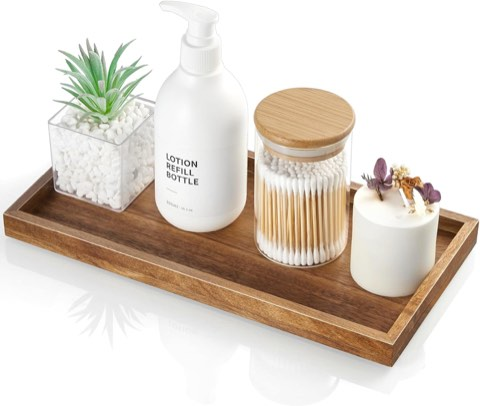
ALELION 11.7" Bathroom Vanity Tray for Counter - Acacia Wood Decorative Tray for Toilet Tank Makeup Perfume Jewelry Catchall Coffee Table - Wooden Kitchen Countertop Organizer for Soap Dispenser
Shop on Amazon2. Use a Pocket Door
A traditional swinging door can consume valuable floor and wall space.
A pocket door slides into the wall, which can free up room for storage, a larger vanity, or simply better movement.
This option requires more planning because the wall needs to accommodate the sliding door mechanism.
But during a major renovation, changing the door swing or installing a pocket door can improve the entire layout. Sometimes the best way to make a bathroom feel bigger involves changing the thing you barely notice.
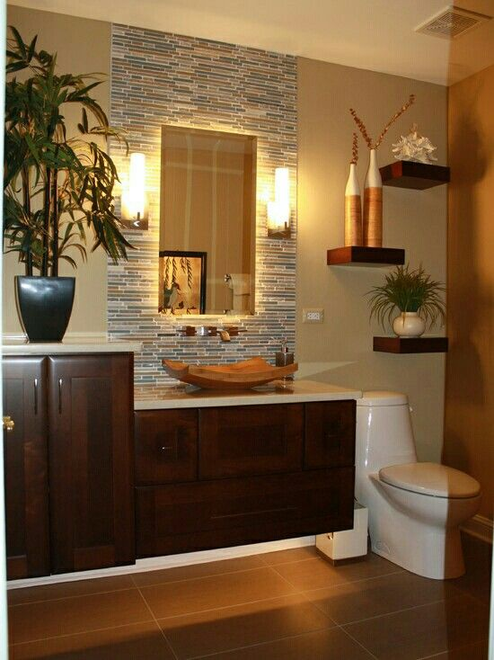
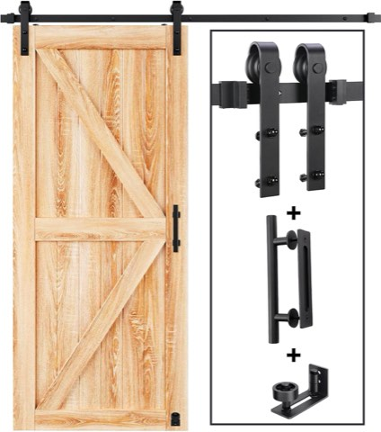
EaseLife 6 FT Sliding Barn Door Track and Handle Hardware Kit,Basic J Pulley,Slide Smoothly Quietly,Easy Install (6FT Track Kit for 30"~36" Wide Single Door)
Shop on Amazon3. Add a Recessed Shower Niche
Shower bottles create instant clutter.
A recessed niche moves those bottles into the wall instead of leaving them scattered around the shower floor. That means better storage without sacrificing floor space.
Use the same tile as the surrounding shower for a subtle appearance. Or use a contrasting tile if you want the niche to become a small design feature.
Just make sure your contractor plans the niche carefully around plumbing and waterproofing. A beautiful niche that causes water problems later definitely does not belong on anyone's list of good bathroom ideas.
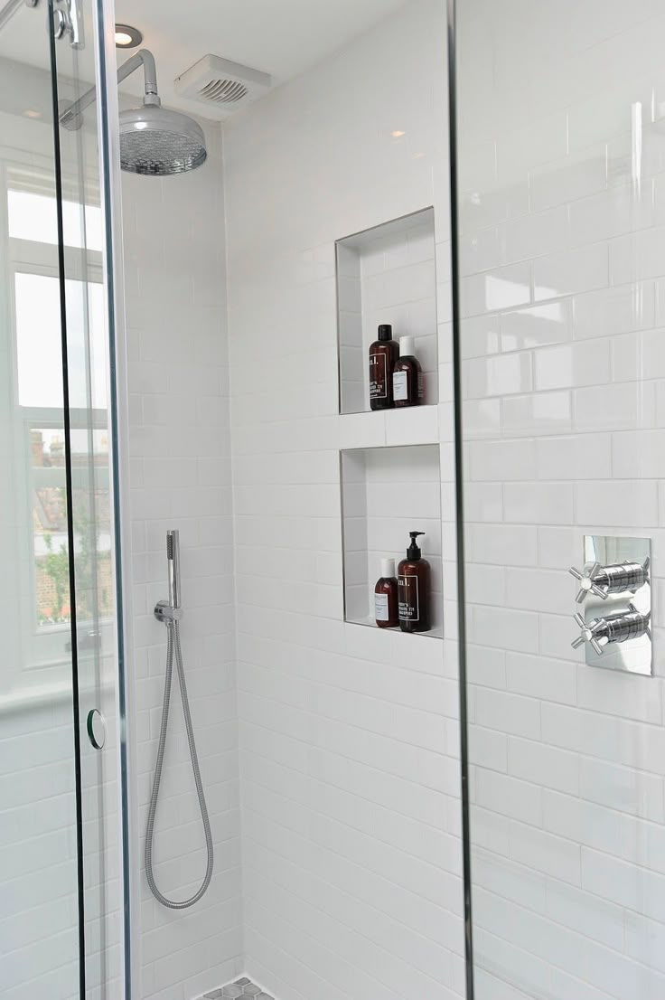
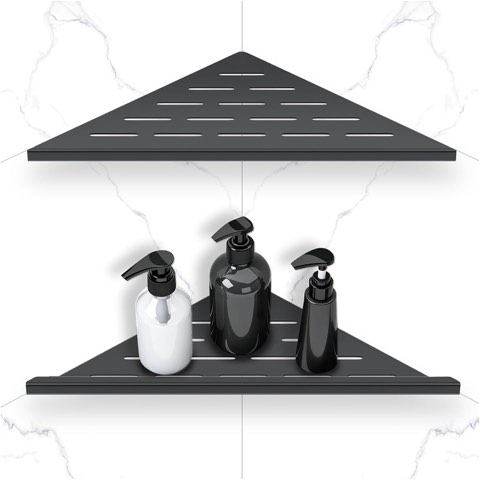
10'' Matte Black Corner Shower Shelves Bathroom Corner Shelf,304 Grade Stainless Steel Slot Design Recessed Corner Shelves Suitable for Tiled Wall,2-Pack
Shop on Amazon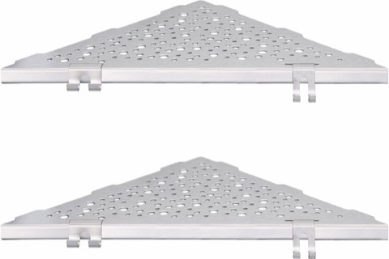
WELLUP Shower Shelf Brushed Nickel 2 Pack,Corner Shower Shelf with 4 Hooks
Shop on Amazon4. Keep Hardware Consistent
Here is a small detail that makes a bigger difference than people expect.
Choose one dominant hardware finish. For example: brushed brass throughout, or matte black throughout, or chrome throughout.
When every fixture uses a different finish, the bathroom starts looking visually fragmented.
You can mix metals, but I would only do that intentionally. If you want the easiest route to a polished bathroom, keep your finishes consistent.
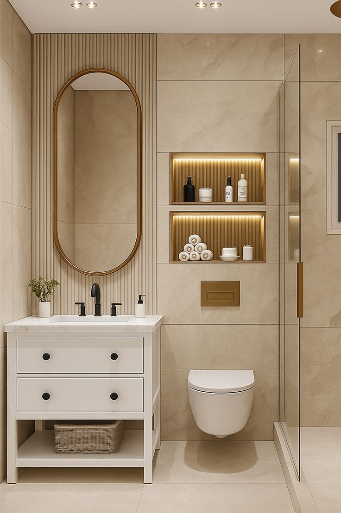
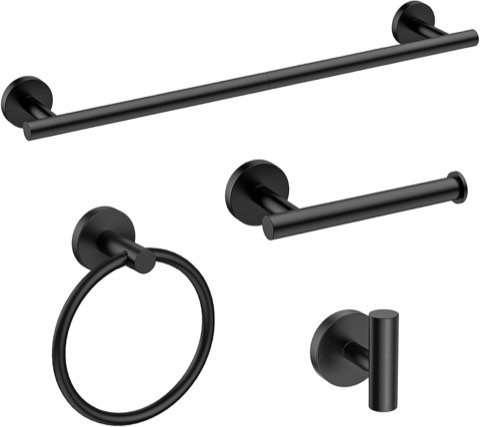
USHOWER 4PCS Matte Black Bathroom Accessories Set, 24-Inch Towel Bar Set
Shop on Amazon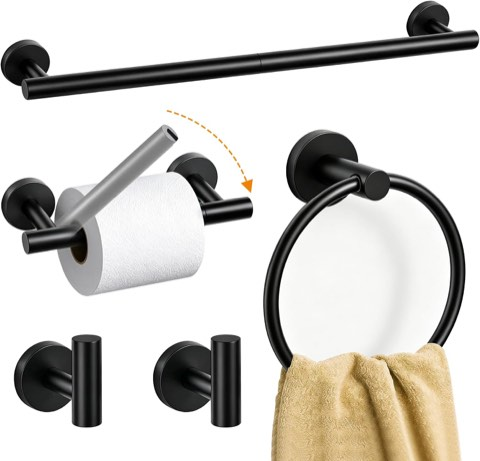
5 Piece Matte Black Bathroom Hardware Accessories Set, 24" Towel Bar Set
Shop on Amazon5. Extend Tile to the Ceiling
Stopping tile halfway up the wall can create a strong horizontal line.
In a compact shower, taking the tile all the way to the ceiling can visually increase the height of the space. Vertical continuity draws your eyes upward.
That makes this one of those small bathroom ideas that costs more during installation but can have a major visual impact.
You can also paint the remaining walls in a similar shade if full-height tile does not fit your budget.
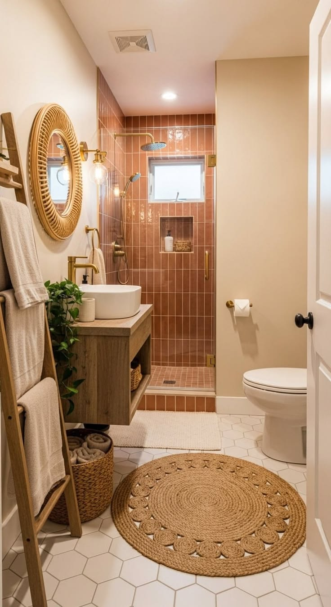
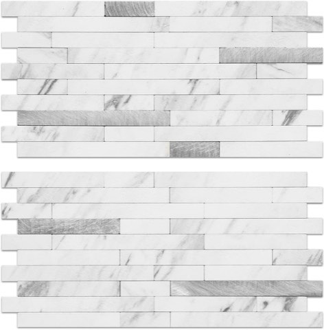
AULIGET 20 Sheets Faux Stone Peel and Stick Backsplash, White Marble Look PVC Wall Tiles Stick on Backsplash for Kitchen
Shop on Amazon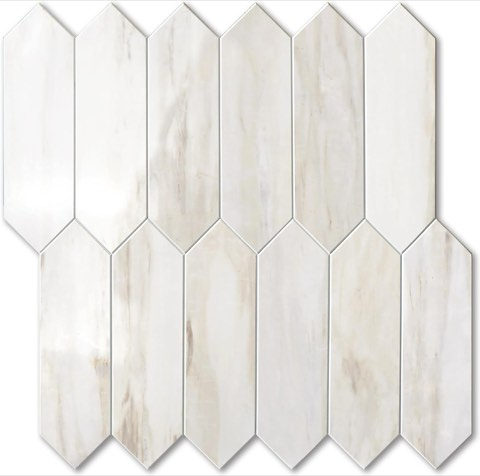
Vamos Tile Glossy Wood Marble Grain Backsplash Tile Peel and Stick, 12.8 x 12.8 Inch 10 Sheets Long Hexagon PVC Self Adhesive Mosaic Wall Tiles Stick on Backsplash for Kitchen and Bathroom
Shop on Amazon6. Pick a Light-Colored Floor
Dark flooring can look gorgeous, but it can also visually anchor a small bathroom and make the room feel heavier.
For a brighter appearance, consider light beige, soft gray, cream, pale stone, or light wood-look flooring.
You do not need to choose plain white. A lightly textured beige tile can actually hide everyday dirt better than bright white flooring while still maintaining an airy appearance. That combination wins in my book.
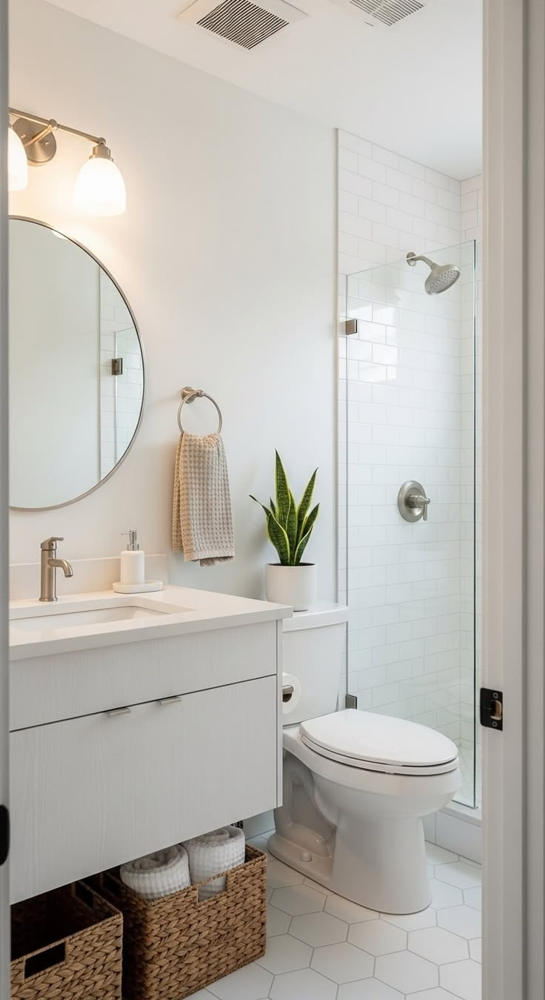
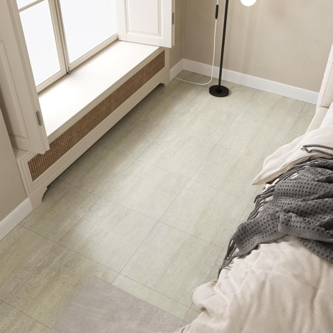
VaryStyle 12"x12" Light Beige Concrete Peel and Stick Floor Tiles Thick Vinyl Flooring Waterproof Self Adhesive Removable Sticky Stick on Floor Tile for Kitchen Bathroom Basement Flooring 6 Tiles
Shop on Amazon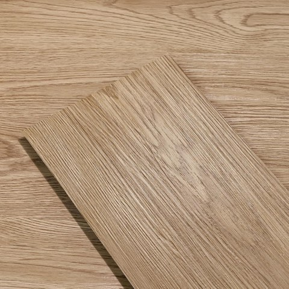
Light Oak Peel and Stick Floor Tile Waterproof Vinyl Flooring Wood 32-Pack
Shop on Amazon7. Use a Curved Vanity or Rounded Fixtures
Sharp corners can make a narrow bathroom feel even tighter.
If you have a particularly awkward layout, consider introducing a rounded vanity, curved mirror, or rounded sink. The softer shapes can improve movement around tight corners.
Ask yourself where you naturally walk when you enter the bathroom. Does the vanity stick into the walkway? Does the shower door collide with the toilet? Does the cabinet make you turn sideways?
A beautiful bathroom that makes you perform gymnastics every morning needs a redesign. Functional clearances and thoughtful activity zones get emphasized in planning guidelines for exactly this reason.
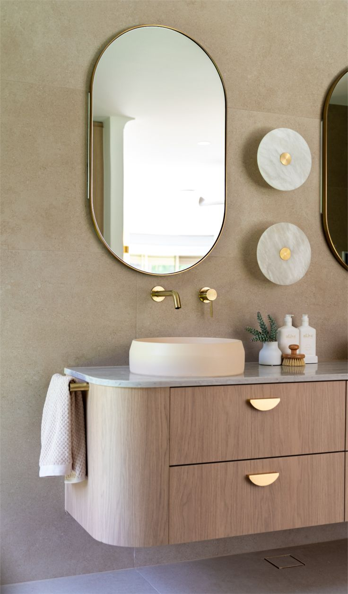
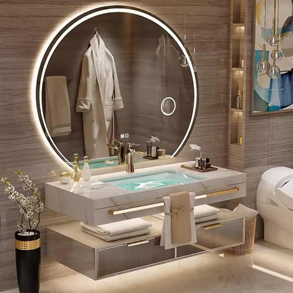
Floating Bathroom Vanity with Sink, Luxury Bathroom Vanity with LED Round Smart Defogger Mirror,Multilayer Solid Wood Spacious Storage Drawer Include Faucet and Drain Fittings,Single Sink(32")
Shop on Amazon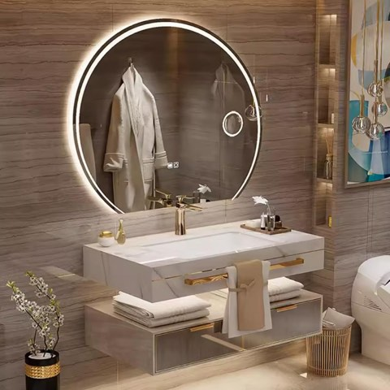
36 Inch Luxury Bathroom Vanity, Floating Bathroom Vanity with Sink and LED Round Smart Defogger Mirror, Multilayer solid wood Spacious Storage Drawer Include Faucet and Drain Fittings,Single Sink
Shop on Amazon8. Improve the Bathroom Lighting
You can have the perfect white walls and beautiful tile, but bad lighting can still make your bathroom feel like a cave.
Good lighting makes surfaces brighter, highlights reflective materials, and reduces dark corners.
Combining general lighting with task lighting for bathroom activity areas like grooming and showering tends to work best. For a small bathroom, consider:
- Ceiling lighting for general illumination
- Vanity lighting for grooming
- Mirror lighting for the face
- Low-level lighting for nighttime use
I particularly like illuminated mirrors because they combine function with a very clean appearance.
A single, small lighting fixture stuck in the middle of the ceiling really doesn't suffice by today's standards anymore, and honestly, I agree. One sad ceiling bulb rarely makes a small bathroom look luxurious.
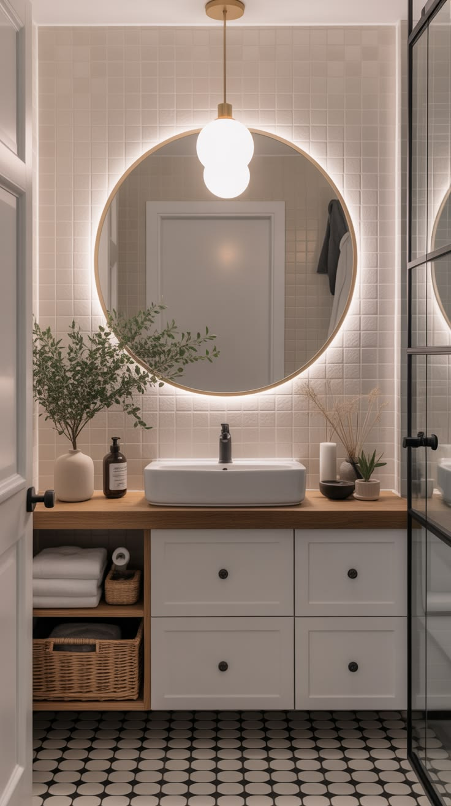
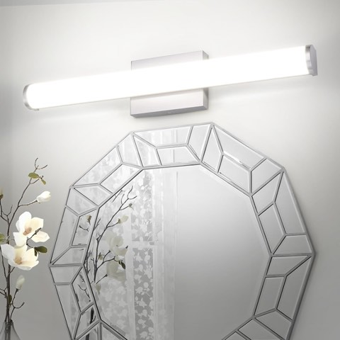
ASD 24" LED Linear Vanity Light Fixture, Modern Bathroom Sconce — 3 Color 3000K-5000K, Dimmable, 25W 1750LM, Energy Star & ETL Listed — Over Mirror Makeup Slim Bar for Bedroom, Cabinets — Nickel
Shop on Amazon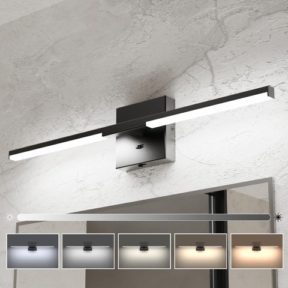
Ensenior 24" Modern Bathroom Vanity Lights, Built-in Dimmer, 5CCT, Black
Shop on Amazon9. Use One Large Statement Mirror Instead of Several Small Pieces
Small bathrooms often benefit from fewer, larger visual elements.
Three tiny mirrors might sound creative, but they can make a narrow wall look busy.
A single oversized mirror creates a stronger focal point. You can make it more interesting with:
- Rounded corners
- A thin metal frame
- Integrated lighting
- A simple wood frame
- A pill-shaped silhouette
The key involves scale, not complexity.
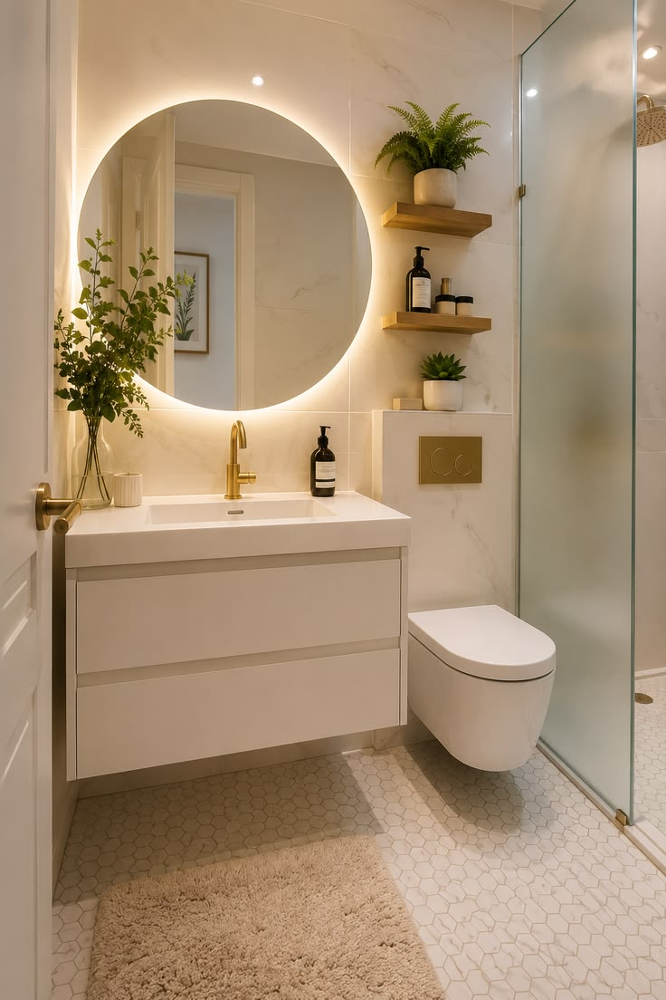
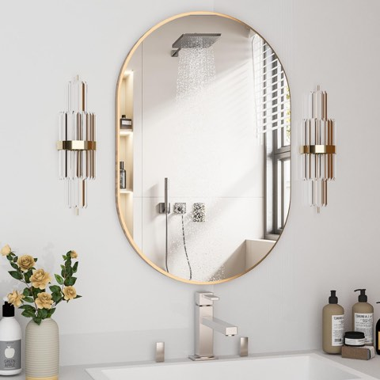
Oval Bathroom Mirror Capsule Wall Vanity Mirror, 20"x30" Pill Mirrors Wall Mounted Mirror, Large Modern Mirror with Gold Metal Frame, Decor for Entryway, Bedroom, Living Room
Shop on Amazon10. Choose a Wall-Mounted Toilet
A wall-mounted toilet can create a surprisingly spacious appearance.
Because the tank sits inside the wall, the toilet takes up less visual space and leaves more of the floor visible.
Wall-mounted toilets specifically get highlighted as a way to create more visual space and make cleaning underneath and around the toilet considerably easier.
This option works best during a renovation because you need to plan the concealed tank and wall structure properly.
I would not recommend ripping apart your bathroom simply for this feature if your existing toilet works perfectly. But if you already plan to renovate? Definitely put it on the list.
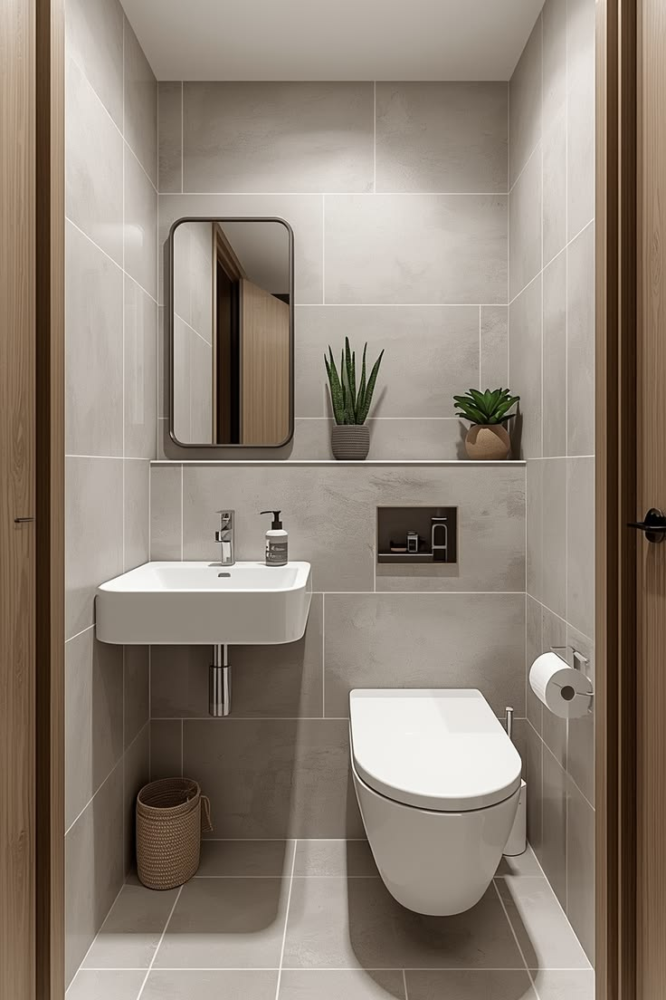
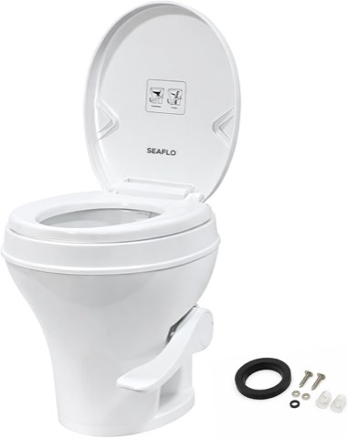
SEAFLO RV Toilet – 18.4" Residential Height, Gravity Flush Foot Pedal, 4-Year Warranty, Fits Most RVs (9.5" Rough-In), Soft Close Seat, 2-Bolt Mount, for Camper Travel Trailer Motorhome SFRTPH-01-01
Shop on Amazon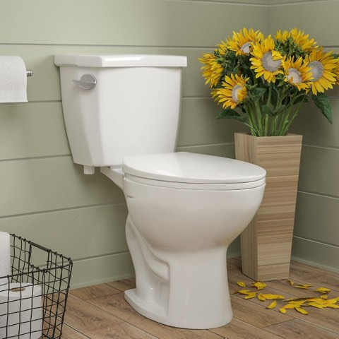
DeerValley Two-Piece Toilet ADA American Standard Toilet 12" Rough in 1.28 GPF Power Flush Two-Piece Elongated Toilets for Bathrooms Comfort Height High White (Toilet Seat Included)
Shop on Amazon11. Take Your Bathroom Storage Vertical
When floor space disappears, look upward.
Vertical storage uses wall space instead of precious floor area, making it one of the smartest small bathroom ideas for renters and homeowners alike.
Try a narrow recessed medicine cabinet, tall cabinet, slim shelving, or wall-mounted storage.
Here is where people go wrong. They install three shelves and then cover every inch with bottles. Congratulations. You just created a wall of clutter.
Keep frequently used products accessible and hide everything else. I personally prefer closed storage for visual calm and one or two open shelves for decorative items.
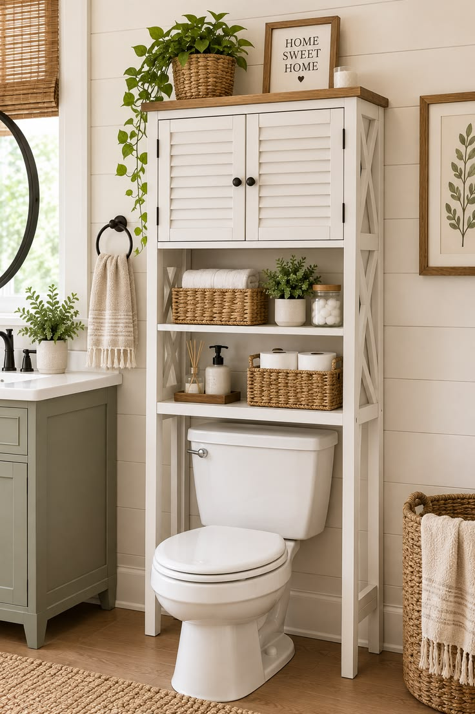
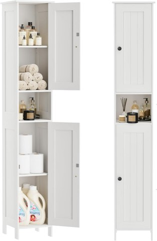
Homleke Tall Bathroom Storage Cabinet with 2 Doors, Slim Bathroom Cabinet
Shop on Amazon12. Continue the Same Tile From Floor to Wall
One of my favorite small bathroom ideas involves reducing visual breaks.
Imagine a bathroom with one tile on the floor, another tile around the shower, another backsplash, and a completely different material behind the toilet. Your eye has to process every transition.
Now imagine a large-format tile continuing through several surfaces. Much calmer, right?
You could use: warm beige tile, warm beige grout, cream walls, and a light wood vanity. The room suddenly feels more cohesive.
You do not need to make everything identical. You simply want the materials to communicate with each other instead of arguing across the room.
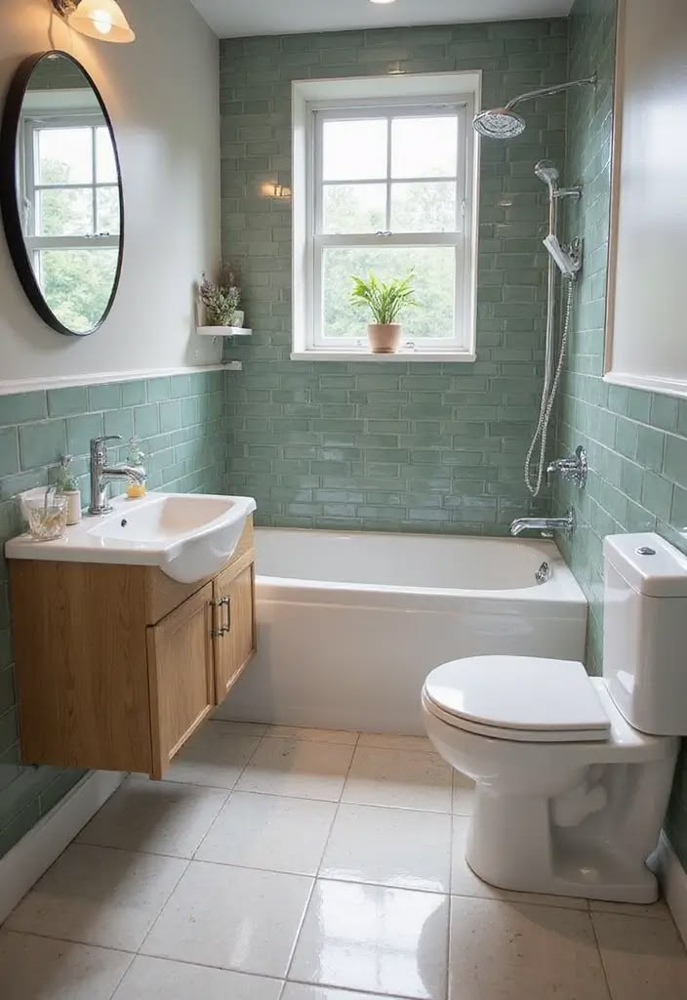
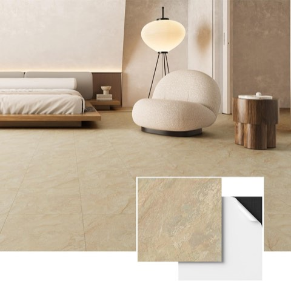
ATOPOSE Waterproof Peel and Stick Floor Tile,Marble Effect,Easy DIY Install
Shop on Amazon13. Use Glass Shower Doors Instead of Curtains
A shower curtain creates a physical and visual barrier. Glass does the opposite.
Clear glass allows your eye to travel through the shower area, which makes the entire bathroom feel more connected. If you have a particularly narrow bathroom, this trick can make a dramatic difference.
If your budget allows, frameless or minimally framed glass can create an even cleaner appearance.
I would choose clear glass over heavily patterned or frosted glass when privacy allows. You can always add a simple window treatment elsewhere if privacy creates a concern.
Frameless glass tends to get highlighted a lot as part of a clean, spa-inspired bathroom look generally.
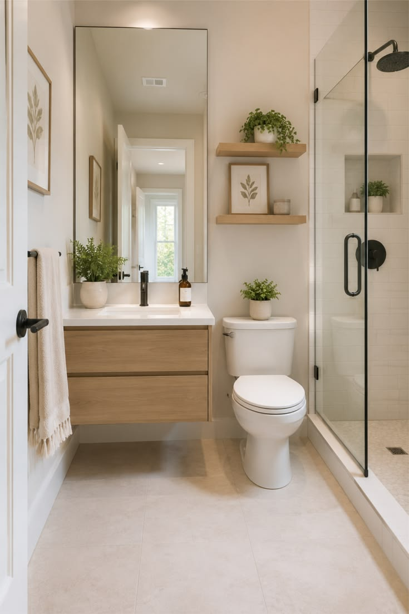
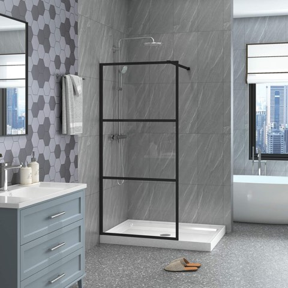
Goodyo Fixed Shower Door 34" X 72" Clear Tempered Glass Shower Screen Panel for Walk-in Bathroom, Black Framed 3 Pieces Shower Glass
Shop on Amazon14. Install a Large Bathroom Mirror
If I could recommend only one inexpensive change, I would probably start with the mirror.
A large mirror reflects light and visually doubles portions of the room, which makes it one of the easiest small bathroom ideas to implement.
Instead of hanging a tiny decorative mirror above the sink, consider extending the mirror closer to the ceiling or across a wider section of the vanity wall. People often underestimate how large a mirror they can use.
A wall-to-wall mirror can look particularly effective in a narrow bathroom because it visually expands the width.
You can also choose a medicine cabinet with a mirrored front if you need storage. That way, the mirror performs two jobs without adding another bulky object.
The area in front of a mirror really should stay evenly illuminated and free of shadows, since that advice matters more than people think, a beautiful mirror cannot do much if poor lighting makes the entire area look gloomy.
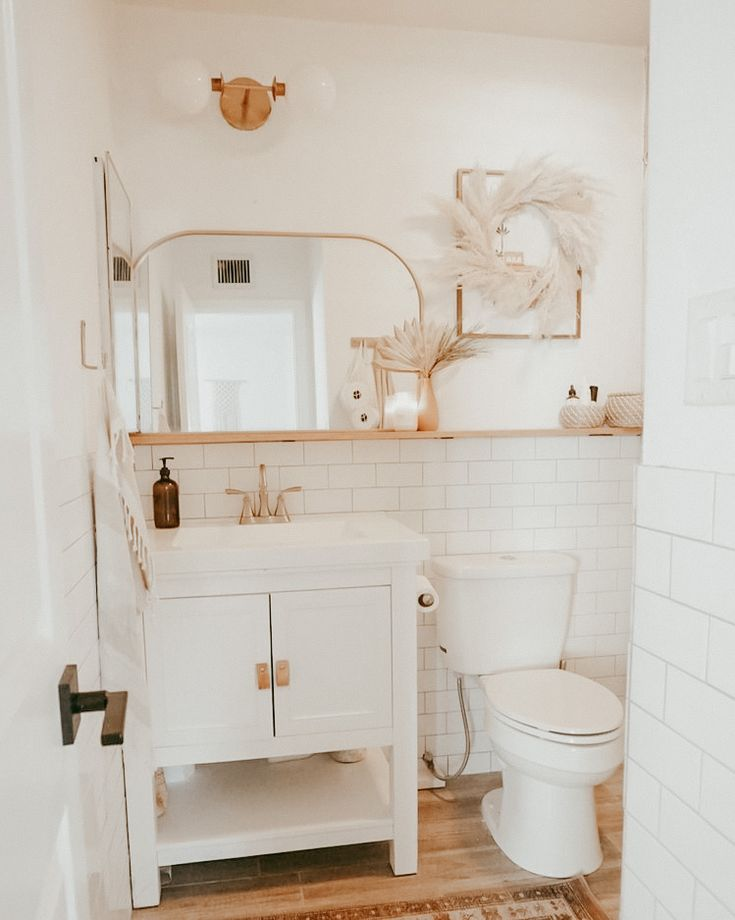

Bathroom Mirror for Wall, 30x22 Inch Rectangle Mirror, Matte Black Metal Framed Bathroom Vanity Mirror for Restroom Farmhouse, Anti-Rust, Tempered Glass, Horizontally or Vertically Hanging
Shop on Amazon15. Choose a Floating Vanity
A floating vanity ranks very high on my list of small bathroom ideas because it immediately changes how much floor you can see.
Instead of sitting directly on the floor, a wall-mounted vanity creates an open area underneath. That exposed flooring tricks your eye into seeing more floor space.
A traditional vanity creates a solid visual block. A floating vanity breaks that block.
You can also use the space underneath for a small basket if you need additional storage, although I would avoid filling the entire area. The empty space actually helps create the illusion of openness.
For an especially tiny bathroom, choose a shallow vanity rather than simply choosing the smallest vanity you can find. Depth matters enormously when you have limited floor space.
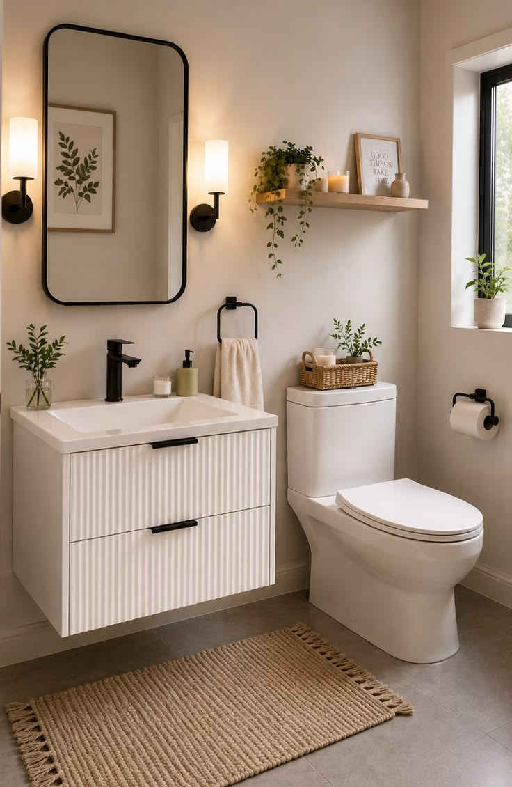

Wall-Mounted Bathroom Vanity 24" – Modern Floating Vanity with Soft-Close Drawers, Plywood Construction, Laminate Finish, Space-Saving Design (Cosmo Sand)
Shop on Amazon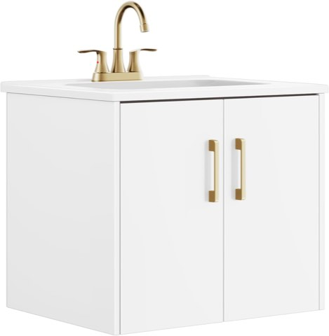
phiestina 24 Inch White Floating Bathroom Vanity, Pre-Assembled Wall-Mounted Cabinet with 2 Soft-Close Doors & 3 Hole Ceramic Sink, No Faucet,BV08-24-WHITE
Shop on AmazonShould a Small Bathroom Use Large or Small Tiles?
This question comes up constantly, and my answer might surprise you.
Large tiles can make a small bathroom feel bigger.
Large-format tiles create fewer grout lines, which means your eye sees fewer interruptions across the floor or wall. Large-format tiles and slabs have been getting more popular generally because they create a cleaner aesthetic with fewer grout lines interrupting the surface.
Use the Same Tile Across Multiple Surfaces
If your budget allows, consider carrying one tile from the shower floor onto the shower walls or using the same wall tile throughout the bathroom.
You do not need identical tile everywhere, but keeping the material palette simple helps.
I would rather see one beautiful tile used generously than six inexpensive tiles competing for attention.
And yes, your bathroom can survive without a decorative border tile. Your walls will cope.
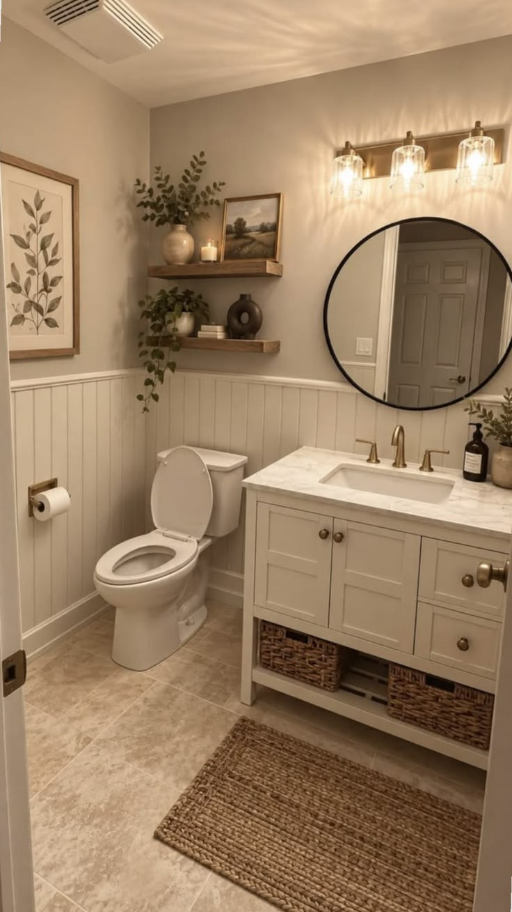
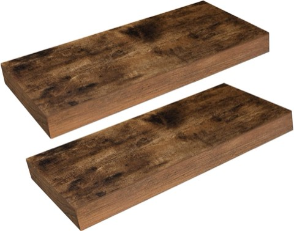
HOOBRO Floating Shelves for Wall, Wall Mounted Shelf Set of 2, 15.7" Hanging Shelf with Invisible Brackets, for Wall Decor Storage in Bathroom Bedroom Kitchen Living Room Office, Rustic Brown BF40BJ01
Shop on AmazonWhat Colors Make a Small Bathroom Look Bigger?
Color can completely change how large a bathroom feels.
For a small bathroom, I usually lean toward soft whites, warm whites, pale beige, light greige, soft taupe, and very light gray. These shades reflect light without making the room feel harsh or sterile.
But here is where I would avoid following the "small room equals pure white" rule too literally.
A warm off-white can make a tiny bathroom feel much more inviting than an icy white. If your bathroom receives warm natural light, shades with creamy or beige undertones can create a soft, airy appearance.
Try a Tonal Color Scheme
One of my favorite small bathroom tricks involves using several shades from the same color family.
For example, you could combine:
- Warm white walls
- Creamy white tile
- Pale beige flooring
- Light oak accents
- Brushed brass hardware
Instead of creating five separate visual blocks, the colors blend together. That continuity makes the room feel calmer and more spacious.
Ever notice how luxury hotel bathrooms often look larger than they actually are? Designers frequently create that feeling through consistent colors and materials rather than throwing ten different finishes into the room.
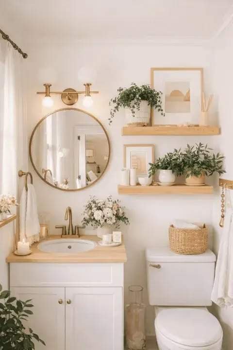
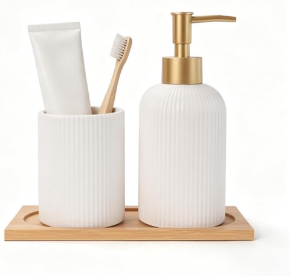
RETON 3 PCS Ceramic Bathroom Accessories Set with Natural Bamboo Tray-White
Shop on Amazon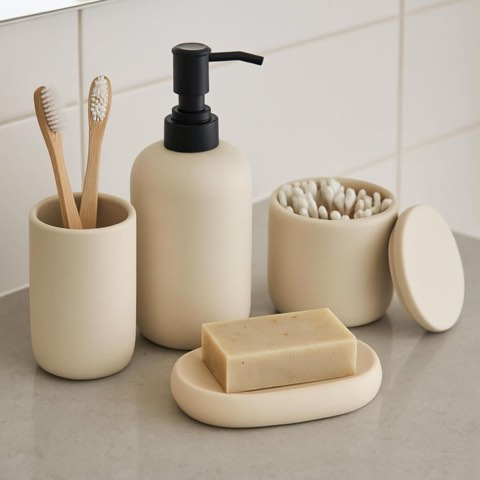
Ava Nord Modern Minimalist Ceramic Bathroom Accessories | Set of 4 | Cream
Shop on AmazonWhy Does a Small Bathroom Feel Even Smaller?
Before choosing paint colors or shopping for a new vanity, take a good look at what makes the bathroom feel cramped.
Usually, the problem does not come from the actual square footage alone. Visual clutter, poor lighting, bulky furniture, dark surfaces, and blocked sightlines can make a small bathroom feel considerably tighter.
Think about it this way. If your eyes can move easily from one side of the bathroom to another, your brain reads the room as more open. If your eyes keep hitting cabinets, shelves, curtains, dark corners, and random bottles, the room suddenly feels packed.
Clear Sightlines Matter
This explains why floating vanities and frameless shower glass work so well in compact bathrooms. They allow more of the floor and walls to remain visible.
I particularly like this approach in narrow bathrooms. Instead of asking, "What can I fit here?" ask, "What can I remove from the visual field?"
That small change in thinking can completely change your design.
Clean lines and easy-to-clean surfaces have become increasingly important in bathroom design generally, with seamless storage and fewer visual interruptions doing most of the work toward a cleaner-feeling space.
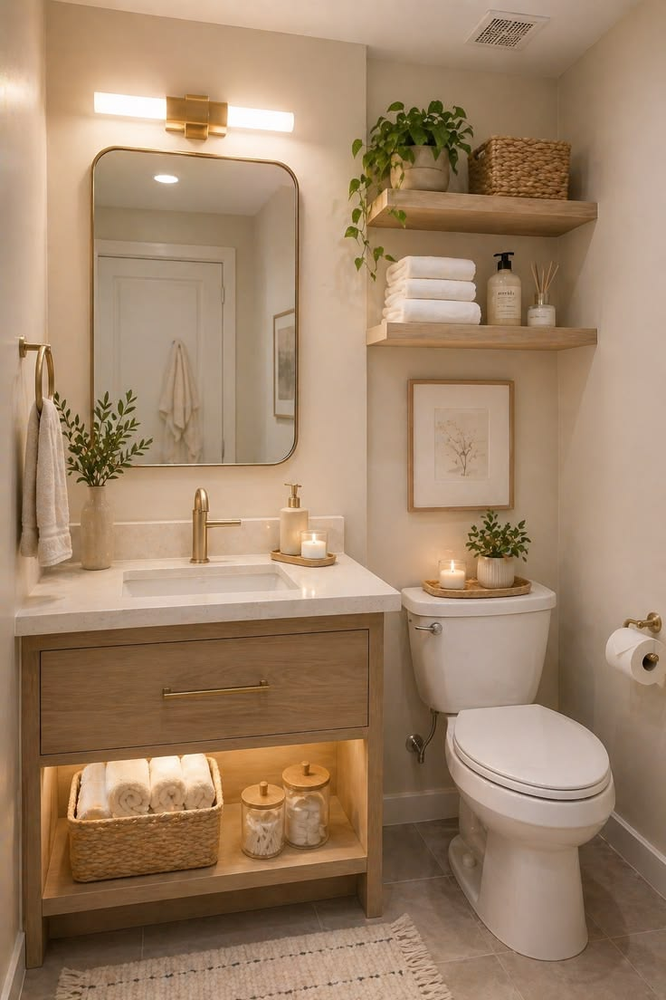
Teak Shower Mat - Foldable Wood Bath Mat for Spa, Sauna, Pool and Home
Shop on AmazonFinal Thoughts on Small Bathroom Ideas
The best small bathroom ideas do not rely on tricks alone. They combine good planning with visual simplicity.
Start with the layout. Then think about light, color, reflection, storage, and sightlines. A floating vanity can expose more floor, a large mirror can reflect light, clear glass can open the shower visually, and a consistent material palette can make the entire room feel connected.
If you only remember a few things from this article, remember these: keep the floor visible, maximize light, reduce visual clutter, use vertical storage, and create continuity between surfaces.
And please do not underestimate the power of putting away 17 bottles of shampoo.
Sometimes the most expensive-looking bathroom upgrade costs absolutely nothing at all, it just takes a little patience and a willingness to actually edit what's sitting out on the counter.
Haturi Bathroom Accessories Set, 4 Pcs Pink Glass Bathroom Accessories Sets Complete w/Lotion Soap Dispenser, Toothbrush Holder, Apothecary Jar, Vanity Tray, Bathroom Decor, Gift for Home Apartment
Shop on AmazonCERBIOR Bathroom Accessories Set, 4 PCS Glass Bathroom Set,Golden Pink
Shop on Amazon